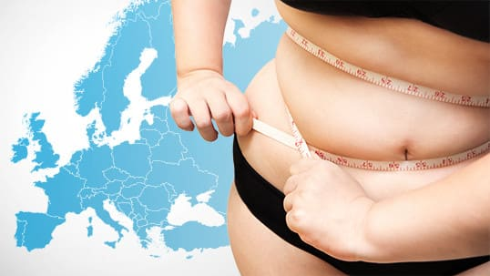
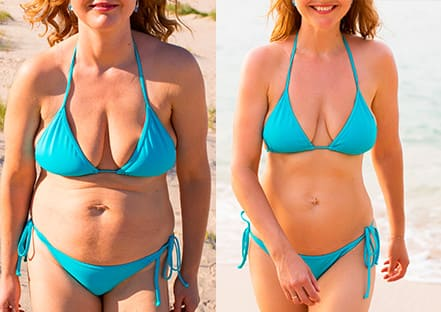
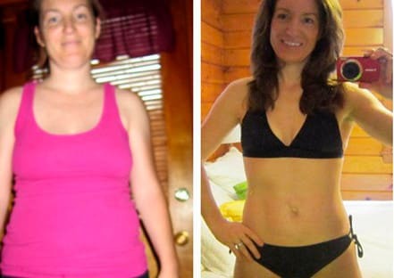
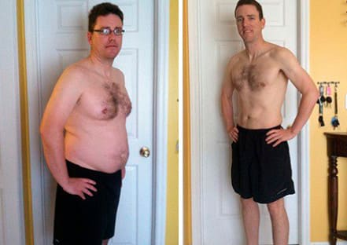

Extrem schnelle und effektive Methode, die die moderne Sichtweise des Fettabbaus revolutioniert.
Experten fanden einen neuen Weg zur Bekämpfung von Fettleibigkeit und Übergewicht, dass nach den klinischen Tests, hat keine Nebenwirkungenhat.
Für viele Europäer ist diese Methode der Fettverbrennung zu einer echten Entdeckung geworden, die das Hungergefühl entfernt und die Fettverbrennung auch in den Fällen erleichtert, in denen die Patienten seit Jahren nicht mehr schlank werden konnten.
Die schockierende Statistik der Weltgesundheitsorganisation (WHO) liefert interessante Daten zu den Problemen der Adipositas in Europa. Laut Statistik hat fast jeder dritte Mensch in Europa Probleme mit Übergewicht . Etwa 20% der Menschen leiden an Fettleibigkeit. Wenn sich diese Tendenz nicht ändert, wird bis 2050 jeder zweite Europäer übergewichtig sein.
Ärzte beunruhigen die Bürger über dieses ernste Problem und es kann zu einer echten Bedrohung für einige Länder Europas werden, was zu den strengen Vorschriften wie in einigen asiatischen Ländern führen kann. Was sind die wirksamsten Methoden zur Bekämpfung der Fettleibigkeit? Die Antwort auf diese Frage gibt das Mitglied der Unabhängigen Union der Ernährungsspezialisten, eine berühmte Ernährungswissenschaftlerin, die sich seit über 20 Jahren mit diesem Problem beschäftigt - Sandra Reichenbach.
Im Jahr 2015 war Sandra Reichenbach ein Teil der klinischen Gruppe, die ein einzigartiges Produkt getestet, das die Sorgen über Fettleibigkeit für immer beenden sollte. Die Wissenschaftler haben das Produkt bereits als Pionier der neuen Generation von Fettvernichtern bezeichnet. Darüber hinaus hilft dieses Produkt auch in den schlimmsten Fällen von Fettleibigkeit und unterstützt das Leben durch die psychologischen Probleme und Belastungen, die auftreten können, wenn Menschen Fett verlieren.
Frau Reichenbach, könnten Sie uns sagen, ob die schockierende Statistik des Gesundheitszentrums ist? Wie oft können Sie die Probleme mit Adipositas in Ihrer Praxis sehen?
Leider können wir die statistischen Zahlen, die wahr sind, nicht ignorieren. Natürlich hängt es vom Land ab. Wenn wir jedoch nach dem Zufallsprinzip zehn Personen im Alter von 18 bis 35 Jahren und noch älter auswählen, können wir feststellen, dass mindestens drei von ihnen übergewichtig sind und einer von drei an Fettleibigkeit leidet.
Die aussichtsloseste Situation mit Adipositas und Übergewicht ist bei Frauen zu beobachten. Laut Statistik des privaten Gesundheitszentrums leiden mehr als 50% der Frauen innerhalb von drei Jahren nach der Geburt an Übergewicht. Die gleiche Statistik wird für die Frauen in den Wechseljahren zur Verfügung gestellt. Außerdem neigen sie dazu, zusätzliches Gewicht zu sparen, da sie keine Probleme mit schlaffer Haut haben wollen.
Gleichzeitig verstehen nicht alle Menschen, wie gefährlich Übergewicht für unseren Körper ist. Adipositas und Übergewicht sind die ersten Anzeichen für viele Krankheiten. Das ist der Hauptgrund, warum Menschen schnell handeln und zusätzliches Gewicht loswerden sollten.
Was sind die wichtigsten Krankheiten, die durch Übergewicht und Adipositas verursacht werden können?
Es gibt eine vollständige Liste der verschiedenen Krankheiten, die durch Korpulenz und Übergewicht verursacht werden können. Am gefährlichsten ist jedoch das viszerale Fett. Es ist technisch gesehen ein Überschuss an intraabdominalem Fettgewebe. Es ist so genanntes tiefes Fett, das die inneren Teile des Körpers bedeckt, wie Herz, Leber oder Nieren. In den schlimmsten Fällen kann es tödlich sein.
Wie können Menschen schnell und effektiv abnehmen? Ist es zu Hause möglich?
Glücklicherweise ist es möglich geworden. Moderne Methoden zur Bekämpfung von übermäßigem Fett lassen Ihnen keine andere Wahl, als schlank und fit zu werden. Ich war Teil der Forschungsgruppe der Unabhängigen Union der Ernährungsspezialisten, die sich für die Entwicklung des revolutionären Produkts eingesetzt hat. Nach den klinischen Tests, Patienten, die den Kurs von verabreicht wurden, begannen, Gewicht zu verlieren, ohne ihren Lebensstil oder ihre Essgewohnheiten zu ändern.
Die klinischen Tests zeigten fantastische Ergebnisse. Ich kann Ihnen die Informationen über eines der jüngsten Ergebnisse mitteilen. Mehr als 1000 Männer und Frauen nahmen an den klinischen Studien teil. Das Alter der Teilnehmer lag zwischen 18 und 50 Jahren. Alle von ihnen nahmen nach dem Rezept.
Ergebnisse:
Wie zerstört Fett? 
Das Hauptproblem aller Menschen, die schnell Fett loswerden wollen, ist ihr Problem mit der Selbstdisziplin. Es ist offensichtlich, dass unser Gehirn den Menschen Signale sendet, wenn wir hungrig sind, und nicht jeder kann mit dem Drang umgehen.
wirkt im Magen, wo Leerräume ausfüllt. Deshalb werden Sie sich immer so fühlen, als hätten Sie schon etwas gegessen und es hilft Ihnen, Ihren Drang nach Zwang-Essen zu überwältigen. Gleichzeitig erlaubt dieser Cocktail nicht, dass externe Kohlenhydrate und Fette in Ihren Körper eindringen. Es bedeutet, dass Ihr Körper keine andere Wahl hat, als seine eigenen Energievorräte zu nutzen, um die normalen Funktionen des Körpers aufrechtzuerhalten.
ist ein einzigartiges Produkt, das keine Verdauung von Kohlenhydraten und Fetten erlaubt. Deshalb, egal welche Nahrung Sie essen, werden Sie Fett verlieren. Die Unterdrückung des Hungers ist das Hauptprinzip, das Menschen dazu bringt, Fett zu verlieren, ohne ihren Lebensstil zu ändern. Es gibt kein anderes Produkt wie dieses auf dem Markt.
ist ein Komplex von einzigartigen Inhaltsstoffen:

Entlädt überschüssige Flüssigkeit aus dem Körper und regt den Stoffwechsel an.
Frau Richards, wo können unsere Leser kaufen?
Für heute ist der beste Weg, zu kaufen, die offizielle Website . Ich empfehle nicht, Produkte von Zwischenhändlern zu kaufen. Zuerst einmal sollten Sie verstehen, dass Vermittler ihr Ziel erreichen. Außerdem ist die Menge dieses Produktes begrenzt und viele Vermittler nutzen es, um Ihnen einen Nachahmer zu verkaufen.
Für heute wird dieses Produkt von der limitierten Auflage angeboten, da der Absatz hoch ist und der Hersteller dabei ist, eine neue Strategie zu entwickeln, um der Nachfrage gerecht zu werden. Deshalb ist es besser, das Produkt gleich jetzt zu besuchen und zu bestellen.
Deine Nachricht
Berühmte Ernährungsberaterin, die dieses Problem seit über 20 Jahren studiert hat.
verbrennen Sie Fett natürlich
Ergebnisse, die für sich sprechen
Ihr könnt euch nicht vorstellen, wie beschissen mein Leben vor war. Ich hatte überhaupt kein Leben. Keine Freunde und ich war wegen meines Gewichts auf keiner Party willkommen. Ich habe dieses Produkt 1 Monate lang benutzt und etwa 10 Kilo abgenommen! Jetzt bin ich ein Star auf jeder Party!
Ich musste auf die Hochzeit meiner Schwester vorbereitet sein, aber ich konnte nicht zu meinem Lieblingskleid passen. Ich hatte nur eine Woche Zeit, um etwa fünf Kilo zu verbrennen. Dank war es keine Herausforderung für mich. Ich war die Hübscheste, natürlich nach meiner Schwester!
Nach den Wechseljahren hat sich mein Leben völlig verändert. Ich habe versucht, dieses hartnäckige Fett loszuwerden, aber kein Produkt hat mir geholfen. Mein Arzt empfiehl mir . Ich konnte es nicht glauben, aber meine Taille wurde schlanker. Ich habe in einem Monat 10 Kilo abgenommen. Es ist ein Wunder!
Ich schämte mich für meinen Körper und damit konnte ich nichts anfangen. Sogar meine Frau fing an, ihren Ekel über meinen Körper zu zeigen. Deshalb hat sie mir gekauft. Ich muss sagen, es war das erste Mal, dass sie eine sehr gute Sache gekauft hat. Ich habe in 1 Monate etwa 13 Kilo abgenommen.
Kommentare
Danke für die Rezension. Ich habe das Produkt bestellt und der Manager hat mir versichert, dass nicht viel davon im Lager ist. Ich habe die 1-monatige Kur bestellt.
Was ist das beste Programm für dieses Produkt?
Es wird empfohlen, die gesamte 1-monatige Kur zu absolvieren, um das zusätzliche Gewicht und die Toxine in Ihrem Körper vollständig loszuwerden.
Experte 55Ich habe vor etwa 1 Monate begonnen, zu benutzen. Es war nur ein Wunder. Ich konnte bis auf 45 Kilo abnehmen, als ich 97 Kilo wog!
Wer hat noch ausprobiert? Hat es wirklich geholfen?
Volda Simmel 64Ich versuchte es und schaffte es, 30 Kilo in einem Zug zu verlieren!
Lulu Pross 123Ich habe vor ein paar Tagen bestellt. Ich habe viele positive Kritiken darüber gelesen. Kann es kaum erwarten, wenn es zu mir kommt.
Theresa Rothman 67Ich bin 25, aber ich habe bereits das Problem der Fettleibigkeit. Mein Arzt hat mir verschrieben, da es keine Nebenwirkungen hat und eine gesunde und natürliche Gewichtsabnahme fördert.
Hann Seiler 44Ich habe weitere interessante Informationen über das Produkt von der offiziellen Website gelesen. Wenn Sie mehr über dieses Produkt erfahren möchten, finden Sie es dort!
Gretel Osterman 32Ich habe den 1-Monatskurs für meine Frau gekauft. Ich wollte nur ihre Leiden wegen Fettleibigkeit beenden. In vier Monaten hat sie etwa 40 Kilo abgenommen. Im Moment wiegt sie etwa 60 Kilo.
Hat es irgendwelche Nebenwirkungen?
Suz Becker 62Wenn Sie keine Allergie auf die Bestandteile des Produkts haben, dann ist es völlig sicher für Sie. hat alle notwendigen klinischen Tests bestanden und kein Patient hat über Nebenwirkungen berichtet.
Experte 102Meine Freundin hat dieses Produkt 3 Monate lang benutzt und es hat ihr wirklich geholfen. Deshalb habe ich mich entschlossen, es selbst zu bestellen.
Vreni Perle 54Danke für die Empfehlungen. Ich habe bereits bestellt.
Sophie Koch 87Erschwinglicher Preis und wunderbare Wirkung! Nur 3 Monate und ich habe es geschafft, von 80 auf 50 Kilo abzunehmen!
Danke! Es hat wirklich geholfen, mein Leben zu verändern.
Hiltrud Schmidt 67Ich habe es für meinen Freund bestellt. Er konnte einfach kein zusätzliches Gewicht loswerden. half ihm, 28 Kilo abzunehmen. Ihn mit seinen 70 Kilo wiederzusehen ist einfach faszinierend.
Nach 5 Jahren Ehe und 2 Jahren nach der Geburt habe ich mich entschlossen, meine Figur in Form zu bringen. Ich habe alles versucht, um mein Gewicht zu verlieren, aber nur hat mir geholfen, einen Unterschied zu machen. Jetzt bin ich zuversichtlich, dass ich für die Strandsaison bereit bin.
Mia Klein 67